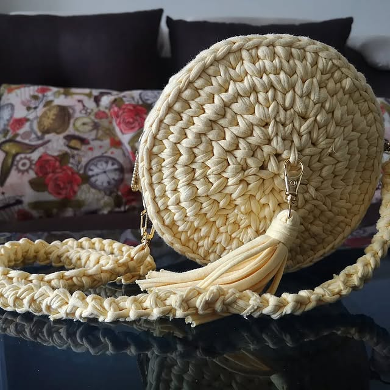
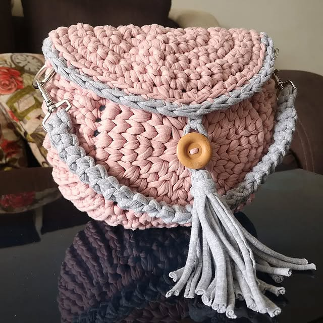
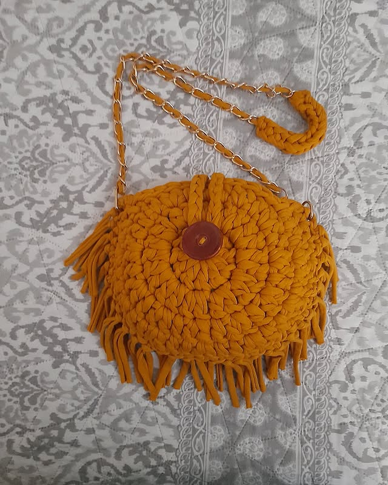
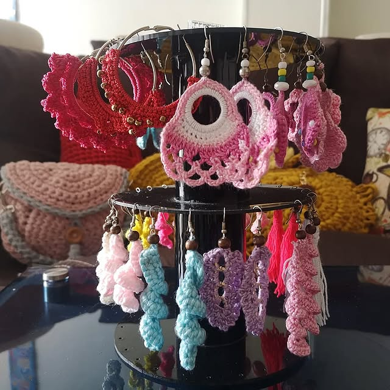
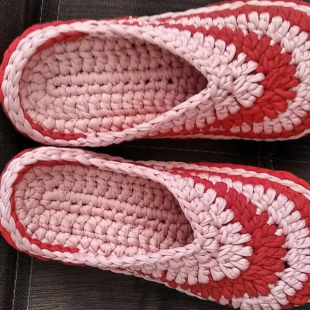

Elige modelo y paleta
Toma como referencia cualquiera de nuestros bolsos, calzados o aretes y define la combinación de colores que va contigo.
«Tejiendo experiencias con hilos de esperanza y alegría»
Bolsos estructurados con herrajes dorados y botones de madera, calzado suave para bebé y accesorios calados hechos punto a punto bajo pedido en tus colores favoritos.



Toca cualquier creación para ver su detalle, materiales y solicitarla personalizada en el tono que prefieras (12 piezas).
«Tejiendo experiencias con hilos de esperanza y alegría»
Cada nudo, borla y acabado se trabaja sin prisa para acompañarte todos los días.
Detrás de @teje_ideas01 hay un taller dedicado a transformar trapillo, algodón e hilazas seleccionadas en bolsos con cuerpo, calzado acogedor y accesorios llenos de textura.
A diferencia de la producción en serie, cada encargo admite ajustes reales: puedes elegir el tono del hilo, combinar ribetes o decidir el largo de la correa y el tipo de cierre.


Trabajamos bajo pedido para que cada pieza salga exactamente como la imaginaste.
Toma como referencia cualquiera de nuestros bolsos, calzados o aretes y define la combinación de colores que va contigo.
Por WhatsApp acordamos medidas, herrajes, botón o correa, precio exacto y tiempo estimado de tejido antes de iniciar.
Tejemos tu pieza a mano punto a punto, revisamos cada remate y coordinamos la entrega con seguimiento directo.
Selecciona el tipo de pieza y tu color favorito; al enviar, preparamos tu mensaje listo en WhatsApp.